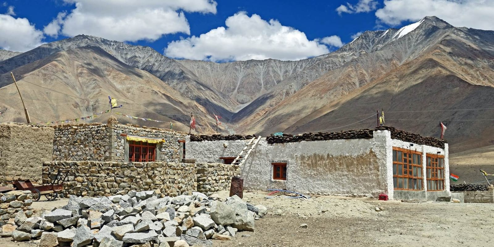

Pavilion of Earth & Light
Ladakh, Himalayan Foothills
Stabilized rammed-earth walls (600mm) paired with a Douglas-fir diagrid roof structure. Leverages high thermal inertia to counter sub-zero diurnal temperature swings.
- Footprint
- 840 m²
- Envelope
- Rammed Earth & Low-E Glazing
- Thermal Mass
- 14.2 hr Lag